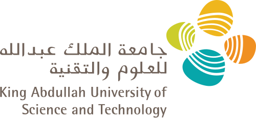
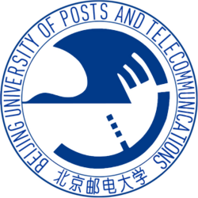
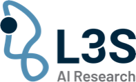

|
Zhenwei (Joseph) Tang
Ph.D. Candidate Home | Publications | Service |

|
I am a Ph.D. candidate in Computer Science at the University of Toronto, advised by Prof. Ashton Anderson and co-advised by Prof. Richard Zemel; my supervisory committee also includes Prof. Chris Maddison and Prof. Colin Raffel. I am also a Student Researcher at Google and a Faculty Affiliated Researcher at the Vector Institute. My research focuses on human behavior modeling with AI/ML: understanding and modeling human decision-making, particularly in strategic domains such as chess, at the intersection of artificial intelligence and human cognition. My broader interests span LLM evaluation, LLM post-training, knowledge graphs, and recommender systems.
Previously, I received my M.S. in Computer Science from the King Abdullah University of Science and Technology (KAUST), where I worked on knowledge representation learning and neuro-symbolic reasoning with Prof. Xiangliang Zhang and Prof. Robert Hoehndorf. I obtained my B.S. in Telecommunication Engineering from the Beijing University of Posts and Telecommunications, where I was a member of the Elite Class.
- Jun 2026: I started as a Student Researcher at Google!
- Feb 2026: I joined Layer 6 AI as a Research Intern.
- Chessformer: A Unified Architecture for Chess Modeling was accepted by ICLR 2026!
- Jul 2025: I passed the Thesis Topic Approval checkpoint, officially a Ph.D. candidate now!
- Jul 2025: Maia Chess is now in open beta! Powered by Maia-2, you can play against the most human-like chess AI, analyze games with human-aware AI, and train with Maia as your personal coach.
- SEAM: Semantically Equivalent Across Modalities Benchmark for Vision-Language Models was accepted by COLM 2025, see you in Montreal!
- Apr 2025: Two extended abstracts about human behavior modeling in chess were accepted by IC2S2 2025.
- Dec 2024: I passed the Ph.D. Qualifying Exam!
- Sep 2024: Maia-2: A Unified Model for Human-AI Alignment in Chess was accepted by NeurIPS 2024 [preprint], try it out on Lichess @ Lichess Bot, see you in Vancouver!
- Jul 2024: I formed my Ph.D. supervisory committee: Prof. Ashton Anderson (supervisor), Prof. Chris Maddison, and Prof. Colin Raffel.
- May 2024: One paper was accepted by ACL 2024 Findings.
- Apr 2024: Two extended abstracts were accepted by IC2S2 2024, see you in Philly!
- Mar 2024: One paper was accepted by ISMB 2024 and Bioinformatics.
- Nov 2023: LQAC received an Honorable Mention for the Best Paper Award at ISWC 2023.
- Sep 2023: I received the ISWC 2023 Travel Award, see you in Athens!
- Jun 2023: One paper was accepted by ISWC 2023.
- May 2023: One paper was accepted by ACL 2023 Findings.
- Apr 2023: Two papers were accepted by SIGIR 2023.
- Nov 2022: One paper was accepted by Elsevier Information Processing and Management (IP&M).
- Jun 2022: One paper was accepted by ECML-PKDD 2022.
- Apr 2022: One paper was accepted by IJCAI 2022.
- Oct 2021: One paper was accepted by WSDM 2022.
- May 2020: One paper was accepted by KDD 2020.
-
Ph.D. in Computer Science, University of Toronto Sep 2022 – Present
-

M.S. in Computer Science, King Abdullah University of Science and Technology Jan 2021 – Aug 2022 -

B.S. in Telecommunication Engineering, Beijing University of Posts and Telecommunications Sep 2016 – Jul 2020
-
Student Researcher, Google, Toronto, ON Jun 2026 – Present
-
Research Intern, Layer 6 AI, Toronto, ON Feb 2026 – Jun 2026
-
Faculty Affiliated Researcher, Vector Institute for Artificial Intelligence, Toronto, ON Nov 2022 – Present
-

Visiting Student, L3S Research Center, Hannover, Germany Jun 2022 – Aug 2022 -
Research Intern, Institute of Computing Technology, Chinese Academy of Sciences, Beijing, China Jul 2020 – Jan 2021
-
Research Intern, Baidu Research, Beijing, China Oct 2019 – Jun 2020
- Conference Reviewer / PC Member: NeurIPS (2024-2026), ICML (2025, 2026), ICLR (2025, 2026), AAAI (2024-2027), IJCAI (2024-2026), KDD (2024-2026), WWW (2024, 2025), AISTATS (2025, 2026), COLM (2026), ACML (2025), IC2S2 (2025), IJCLR-NeSy (2022).
- Journal Reviewer: ACM TOIS, ACM TKDD, IEEE TKDE, IEEE Transactions on Games, Elsevier IP&M, Elsevier Information Fusion, Elsevier Information Systems.
- Teaching Assistant: Introduction to Computer Programming (UofT, Fall 2022), Introduction to Artificial Intelligence (UofT, Winter 2023).
Last update: June 2026.